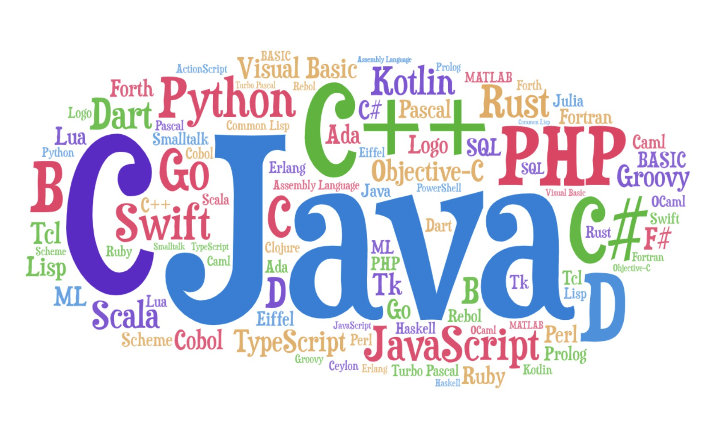
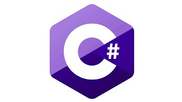
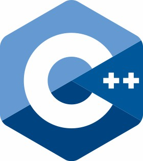

intro to computer science

A programming language is a formal language comprising a set of strings that produce various kinds of machine code output. Programming languages are used in computer programming to implement algorithms.
Most programming languages consist of instructions for computers. There are programmable machines that use a set of specific instructions, rather than general programming languages. Since the early 1800s, programs have been used to direct the behavior of machines such as Jacquard looms, music boxes and player pianos.[1] The programs for these machines (such as a player piano's scrolls) did not produce different behavior in response to different inputs or conditions.
Thousands of different programming languages have been created, and more are being created every year. Many programming languages are written in an imperative form (i.e., as a sequence of operations to perform) while other languages use the declarative form (i.e. the desired result is specified, not how to achieve it).
The description of a programming language is usually split into the two components of syntax (form) and semantics (meaning). Some languages are defined by a specification document (for example, the C programming language is specified by an ISO Standard) while other languages (such as Perl) have a dominant implementation that is treated as a reference. Some languages have both, with the basic language defined by a standard and extensions taken from the dominant implementation being common.
list of programming language
|
|

|

|
C Language |
C# Language |
C++ Language |